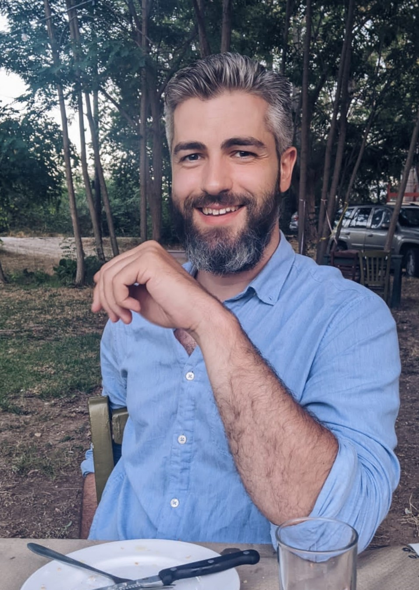
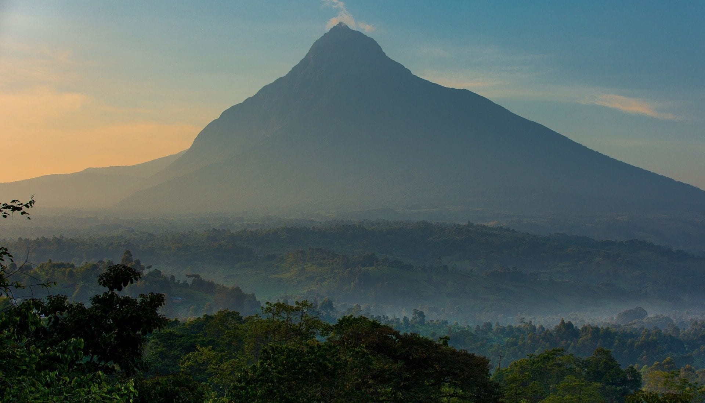

Who am I
French product, born and raise, living in Belgium for a couple years now. Came here for work. Stayed for love.

Where I come from
I'm French, yes, but from the south - a land where wine making, olive oil and (sadly) corrida are part of the way of life. And where rugby is preferred to football.

The journey
Before making "The Switch", I worked for 8 years at the Institute of Tropical Medicine in Antwerp. The job included frequent periods of field work, what has been a very interesting opportunity to travel and discover the World, Africa in particular.
